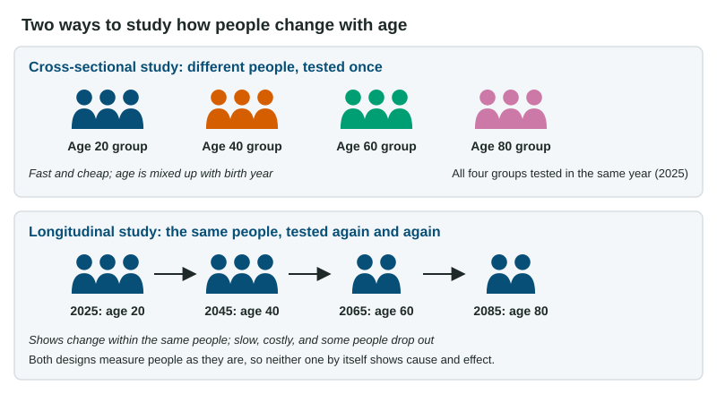

Themes and Methods in Developmental Psychology
Developmental psychology asks how people change and stay the same across life, framed by nature and nurture, continuity and discontinuity, and stability and change.
Part 1 · Hook
Why this matters
Part 2 · Before you start
What this builds on
Part 3 · Prerequisite check
Quick check before you start
1. A researcher measures two variables as they occur and finds . What can she conclude?
- The variables are related, but one may not cause the other
- One variable causes the other
- The variables are unrelated
- She ran an experiment
Show the answer
A correlation shows a relationship; without manipulation it cannot show cause.
- Correct: The variables are related, but one may not cause the other:
- One variable causes the other:
- The variables are unrelated:
- She ran an experiment:
2. What does an identical-twin study help researchers separate?
- The roles of heredity and environment
- Random sampling and random assignment
- Recall and recognition
- The mean and the median
Show the answer
Twins share genes to different degrees, which lets researchers compare heredity with environment.
- Correct: The roles of heredity and environment:
- Random sampling and random assignment:
- Recall and recognition:
- The mean and the median:
Part 4 · See it
See it first

Part 5 · Step by step
How it works, step by step
- A cross-sectional study compares different age groups at one timeeach age group is also a different birth cohort
- Cohorts grow up with different schooling, health care and technologya difference between age groups can be a cohort effect, not aging
- A longitudinal study follows the same people over yearsit shows change within each person, but people drop out and the study takes years
- Neither design can assign people to an ageneither one, alone, shows that age causes a change
Part 6 · Key ideas
Key ideas
- Three themes frame every developmental question: nature and nurture (they interact), continuity and discontinuity (a ramp or a staircase), and stability and change (does a trait hold steady in a person?).
- A cross-sectional study tests different age groups once: fast, but age is tangled with birth year, so watch for a cohort effect.
- A longitudinal study tests the same people again and again: it shows change within people, but it is slow, costly and loses participants.
- Age cannot be randomly assigned, so developmental designs describe and predict; they do not prove that age causes a change.
Part 7 · Misconception
A common mistake
The wrong idea: If 70-year-olds score lower than 25-year-olds in a cross-sectional study, the scores must fall with age.
What actually happens: The groups also differ in birth year. Some or all of the gap can be a cohort effect; a longitudinal study of the same people is needed to see change with age.
Part 8 · Check yourself
Check yourself
Exam-style questions. Anything you miss goes into your review queue.
Data
Verbal scores by age in two designs
Researchers asked whether verbal ability falls with age. A cross-sectional team tested four age groups once, in 2024. A longitudinal team tested one group of people at age 25 in 1979 and again at 40, 55 and 70. Both used the same 0-60 vocabulary and reading test. Scores are group means.
| Age | Cross-sectional | Longitudinal |
|---|---|---|
| 25 | 54 | 50 |
| 40 | 52 | 54 |
| 55 | 47 | 52 |
| 70 | 41 | 48 |
1. Which statement best describes the results in the graph?
- The cross-sectional scores fall more from 25 to 70 than the longitudinal scores do
- Both designs show scores rising steadily from 25 to 70
- The longitudinal scores fall more from 25 to 70 than the cross-sectional scores do
- The two designs show the same pattern across the ages
Show the answer
Compare where each line starts and ends: cross-sectional 54 to 41, longitudinal 50 to 48.
- Correct: The cross-sectional scores fall more from 25 to 70 than the longitudinal scores do: Right: the cross-sectional line drops 13 points, the longitudinal line only 2.
- Both designs show scores rising steadily from 25 to 70: Neither line rises steadily; the cross-sectional line falls at every age.
- The longitudinal scores fall more from 25 to 70 than the cross-sectional scores do: This reverses the lines: the longitudinal scores end only 2 points below where they started.
- The two designs show the same pattern across the ages: At 70 the two designs differ by 7 points, and their shapes differ.
2. In the cross-sectional results, how many points lower is the mean of the age-70 group than the mean of the age-25 group?
Type a number. No calculator needed: work it out by hand, as on the exam.
Show the answer
Subtract: points.
- Answer: 13
3. The 70-year-olds in the cross-sectional study were born around 1954; the 25-year-olds around 1999. What best explains why the cross-sectional design shows a steeper drop?
- Random assignment placed weaker readers in the older group
- A cohort effect: the older group grew up in different times
- Attrition: people who scored low dropped out before age 70
- Practice: the older people had taken the test several times before
Show the answer
In a cross-sectional study, age and birth year go together, so a difference between age groups can come from growing up in different times.
- Random assignment placed weaker readers in the older group: Nobody can be randomly assigned to an age; the groups were recruited at their ages.
- Correct: A cohort effect: the older group grew up in different times: Right: the age groups also differ in birth year, so generation differences look like aging.
- Attrition: people who scored low dropped out before age 70: Dropouts are a problem of longitudinal studies; each cross-sectional group was tested once.
- Practice: the older people had taken the test several times before: Repeated testing happens in a longitudinal study, and practice would raise scores, not lower them.
4. A researcher finds that children’s vocabulary grows a little every month, with no sudden jumps. A colleague argues that children’s reasoning changes in distinct steps, each a different way of thinking. Which theme are they debating?
- Stability and change
- Cross-sectional and longitudinal
- Continuity and discontinuity
- Nature and nurture
Show the answer
Continuity pictures development as a ramp; discontinuity pictures it as a staircase.
- Stability and change: Stability is about whether a trait stays the same in a person, not whether growth is gradual or stepwise.
- Cross-sectional and longitudinal: Those are research designs, not a theme about how development happens.
- Correct: Continuity and discontinuity: Right: gradual growth is continuity; distinct steps (stages) are discontinuity.
- Nature and nurture: Neither claim is about genes versus experience; both are about the shape of change.
5. At a high school reunion, Maya says, "Jordan was the class clown at 16 and is still the funniest person in any room at 40." Which side of which theme does her claim illustrate?
- Nurture, in the nature and nurture theme
- Stability, in the stability and change theme
- Change, in the stability and change theme
- Discontinuity, in the continuity and discontinuity theme
Show the answer
Stability means a person keeps their place on a trait over time.
- Nurture, in the nature and nurture theme: Her comment says nothing about what caused the trait.
- Correct: Stability, in the stability and change theme: Right: she is describing a trait that stayed much the same across 24 years.
- Change, in the stability and change theme: She describes Jordan staying the same, not changing.
- Discontinuity, in the continuity and discontinuity theme: Discontinuity is about development moving in distinct stages, not a trait holding steady.
6. Why can neither a cross-sectional nor a longitudinal study, by itself, show that age causes a change?
- Both designs use samples that are too small to support a claim about cause
- Both designs measure each person at just one point in time
- Both designs require deception, which weakens conclusions
- Age cannot be randomly assigned, so other variables come along with it
Show the answer
Causal claims need manipulation of the variable and random assignment; age allows neither.
- Both designs use samples that are too small to support a claim about cause: Sample size is not why causation is ruled out; a huge sample still cannot assign age.
- Both designs measure each person at just one point in time: A longitudinal study tests the same people many times.
- Both designs require deception, which weakens conclusions: Neither design requires deception.
- Correct: Age cannot be randomly assigned, so other variables come along with it: Right: age comes with birth year, life events and history, which the researcher cannot separate by assignment.
Part 9 · Summary
Summary
Part 10 · Up next
What comes next
Part 11 · Connections